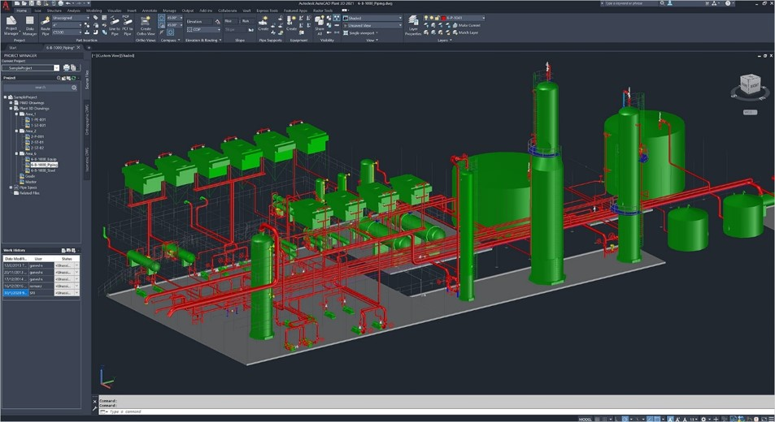

Мультимедиа технологии в автоматизированном проектировании
Суворова Елизавета Олеговна
Группа ИУ3-31М

Суворова Елизавета Олеговна
Группа ИУ3-31М
AutoCAD – это программное обеспечение для трехмерного компьютерного моделирования от Autodesk, которое разработано для проектирования изделий, зданий, планирования производства, гражданской инфраструктуры и строительства.
AutoCAD используется для создания 2D-чертежей, документов, 3D-моделей и визуализаций. Его функции 2D-рисования, черчения и аннотаций включают возможность управления внешним видом текстов, автоматическое создание стилей и размеров, связывание и обновление данных между электронными таблицами и таблицами Microsoft Excel в чертежах и работу с динамическими блоками.
Полезна библиотека в помощь строителям и архитекторам. Помогает автоматически проверить проект на наличие ошибок, создать скрипты и автоматические сценарии для упрощения работы и типовых задач. К примеру, для нескольких этажей в здании нужно выполнить один и тот же перечень процедур.
Ещё один набор скриптов с возможностью пользовательской настройки и автоматизации. В большинстве пользовательских сборок это дополнение находится по умолчанию, так как сильно расширяет способности редактора и упрощает работу.